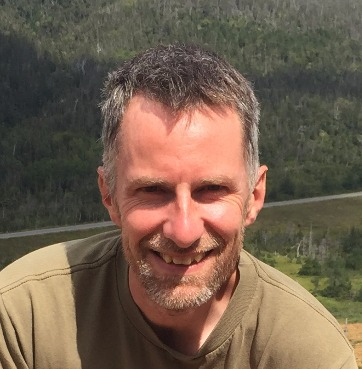
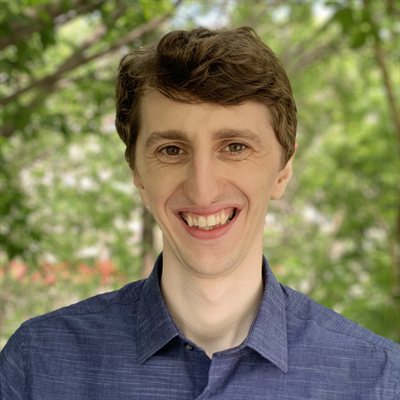
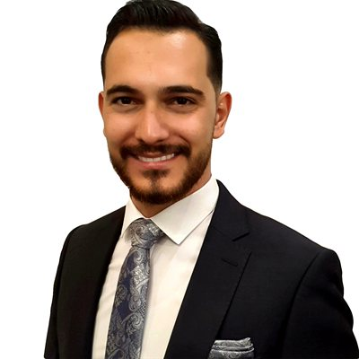
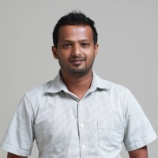
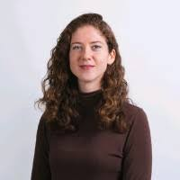
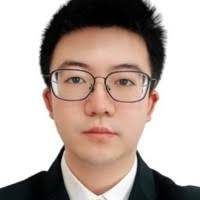
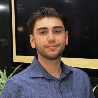

People
The people behind the lab’s research, from the principal investigator to current students and alumni.
Principal Investigator
The Shallow Water Earth Observation Laboratory is led by Anders Knudby.

Anders Knudby does remote sensing research mostly in aquatic environments, and with a main focus on satellite-derived bathymetry. He also supports a very wide variety of other research projects for which spatial information derived from satellite imagery can be useful.
Graduate Students and Postdoctoral Fellows
Graduate students and postdoctoral fellows working across our research themes.

The Landsat archive includes imagery collected by multiple sensors, each with differences that can introduce errors in change-detection analyses. Galen Richardson’s research focuses on developing sensor-harmonization algorithms to enable more accurate change detection and to support the monitoring of lichen cover in the Hudson Bay Lowlands.

Mohsen works on applying Earth observation and modeling approaches to study coastal and inland waters, with an emphasis on improving the retrieval of water quality parameters using machine learning models.

Lakmal studies how pretext-task-based pre-training on unlabeled Earth Observation data can improve geospatial deep learning, boosting accuracy and label-efficiency.

Gabrielle is interested in UAV-based mapping, thermal remote sensing, and using those technologies to develop novel microclimate assessment tools.

Kaiqi is working on extraction of bathymetry information from NASA's ICESat-2 space-based lidar, with a specific focus on automation and application in the Canadian Arctic.

Kyle’s MSc research is focused on development of whale detection algorithms and integration of those into an operational detection system for the North Atlantic right whale.
Carla’s MSc research focuses on long-term monitoring of coastal changes.
Alumni
Former students of the lab, their thesis topics, and where their careers took them next.
Satellite-based detection of North Atlantic right whales in WorldView imagery, and aerial-photography methods for training detection algorithms.
Differentiating eelgrass and submerged kelp with hyperspectral satellite imagery near Sheet Harbour, Nova Scotia.
Adjacency effect correction for inland and coastal aquatic remote sensing.
Airborne lidar bathymetry in complex environments.
Satellite-derived bathymetry.
Modeling outdoor thermal comfort.
Mapping health impacts of the urban heat island.
Mapping lava flows.
Mapping retrogressive thaw slumps and extraction of bathymetry photons from ICESat-2.
Tracking the Gulf Stream with radar data.
Investigating long-term lake dynamics across Canada.
Species distribution modeling.
Mapping wild leek with drones and satellite imagery.
Satellite-derived bathymetry in the Canadian Arctic.
Species distribution modeling.